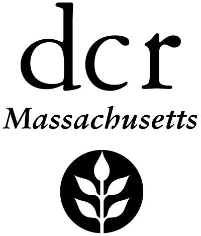

The files shown, described, and linked below are hosted here so they can be placed in ArcGIS Online web mapping applications/dashboards/etcetera.
DCR has a Graphic Standards Manual that governs how you are supposed to use the DCR logo. Contact DCR GIS for details. The logo images below are listed roughly in order of how appropriate/official they are. The standard, official vertical/stacked logo is at the top, followed by the official alternate horizontal logo, then the semi-official compact horizontal logo, and finally the totally unofficial icon-only logo. Read the information below each logo, choose wisely, and contact DCR GIS with any questions.
The different colors are for use in contexts where the regular two-color logo(s) aren't legible due to lack of contrast with the background color. Each logo image was exported at a size that should be adequate for online use (they are not shown at their full size below; ArcGIS Online typically shrinks them to fit the area where you place them). These moderate-resolution RGB-color files are not intended for printing.
In situations where an ArcGIS Online app configuration is asking you to provide a logo by URL, right-click the link below an icon, copy the link, and paste it. For places where AGOL wants you to upload a logo image, you can right-click on an image or the link below the image, save the image, then upload it to AGOL from your computer.
Standard DCR Logo
| Title |
DCR Logo - color transparent RGB .png for web - 400px wide |
DCR Logo - (older) color transparent RGB .png for web - 400px wide |
DCR Logo - black-and-white transparent RGB .png for web - 400px wide |
DCR Logo - black transparent RGB .png for web - 400px wide |
DCR Logo - reverse (white) transparent RGB .png for web - 400px wide |
| Logo |
|
|
 |
|
|
| Filename |
dcr-logo-2020-RGB-400px.png |
dcr-logo-2020-oldRGB-400px.png
[Also hosted on ArcGIS Online] |
dcr-logo-2020-BW-400px.png |
dcr-logo-2020-black-400px.png
[Also hosted on ArcGIS Online] |
dcr-logo-2020-reverse-400px.png
[Also hosted on ArcGIS Online] |
| File Size |
17041 bytes |
17349 bytes |
13374 bytes |
12552 bytes |
14619 bytes |
| Summary |
Standard DCR logo. Newer RGB colors, transparent PNG file, 400 x 469px. For use on web. |
Standard DCR logo. Older RGB colors, transparent PNG file, 400 x 469px. For use on web. |
Black-and-white version of standard DCR logo. Transparent PNG file, 400 x 469px. For use on web (RGB) in circumstances where the color logo won't work (see DCR Graphics Standards Manual). |
All-black version of standard DCR logo. Transparent PNG file, 400 x 469px. For use on web (RGB) in circumstances where the color logo won't work (see DCR Graphics Standards Manual). |
Reverse (all-white) version of standard DCR logo. Transparent PNG file, 400 x 469px. For use on web (RGB) in circumstances where the color logo won't work (see DCR Graphics Standards Manual). |
| Description |
This image is the standard vertically-oriented DCR logo. It is a PNG (.png) file with a transparent background, 400 pixels wide × 469 pixels high. This size should be large enough for typical use as a logo on web apps.
The original logo was specified using PANTONE spot colors. This RGB image uses a newer set of RGB equivalent colors (there is also an older set of RGB equivalent colors that look different (darker/more saturated)). This file is for use on the internet/on-screen, not for print. |
This image is the standard vertically-oriented DCR logo. It is a PNG (.png) file with a transparent background, 400 pixels wide × 469 pixels high. This size should be large enough for typical use as a logo on web apps.
The original logo was specified using PANTONE spot colors. This RGB image uses an older set of RGB equivalent colors (there is also a newer set of RGB equivalent colors that look different (lighter/less saturated)). This file is for use on the internet/on-screen, not for print. |
This image is a black-and-white version of the standard vertically-oriented DCR logo. It is a PNG (.png) file with a transparent background, 400 pixels wide × 469 pixels high. This size should be large enough for typical use as a logo on web apps.
The original logo was specified using PANTONE spot colors. This black-and-white (RGB) image is for use on the internet/on-screen, not for print, in circumstances where the color logo won't work (see DCR Graphics Standards Manual). See also the color, all-black, and reverse (all-white) versions of the logo. |
This image is an all-black version of the standard vertically-oriented DCR logo. It is a PNG (.png) file with a transparent background, 400 pixels wide × 469 pixels high. This size should be large enough for typical use as a logo on web apps.
The original logo was specified using PANTONE spot colors. This all-black (RGB) image with transparent "leaves" is for use on the internet/on-screen, not for print, in circumstances where the color logo won't work (see DCR Graphics Standards Manual). See also the color, black-and-white, and reverse (all-white) versions of the logo. |
This image is a reverse (all-white) version of the standard vertically-oriented DCR logo. It is a PNG (.png) file with a transparent background, 400 pixels wide × 469 pixels high. This size should be large enough for typical use as a logo on web apps.
The original logo was specified using PANTONE spot colors. This all-white (RGB) image with transparent "leaves" is for use on the internet/on-screen, not for print, in circumstances where the color logo won't work—like on top of a dark color (see DCR Graphics Standards Manual). See also the color, black-and-white, and all-black versions of the logo. |
| Terms of Use |
For use by DCR staff. Can be used by other EOEEA staff if necessary - please contact DCR GIS to make sure the use is appropriate. For use on-screen (web apps etc). |
For use by DCR staff. Can be used by other EOEEA staff if necessary - please contact DCR GIS to make sure the use is appropriate. For use on-screen (web apps etc). |
For use by DCR staff. Can be used by other EOEEA staff if necessary - please contact DCR GIS to make sure the use is appropriate. For use on-screen (web apps etc) in circumstances where the color logo won't work (see DCR Graphics Standards Manual). |
For use by DCR staff. Can be used by other EOEEA staff if necessary - please contact DCR GIS to make sure the use is appropriate. For use on-screen (web apps etc) in circumstances where the color logo won't work (see DCR Graphics Standards Manual). |
For use by DCR staff. Can be used by other EOEEA staff if necessary - please contact DCR GIS to make sure the use is appropriate. For use on-screen (web apps etc) in circumstances where the color logo won't work—like on top of a dark color (see DCR Graphics Standards Manual). |
Horizonal DCR Logo
| Title |
DCR Horizontal Logo - color transparent RGB .png for web - 1600px wide |
DCR Horizontal Logo - (older) color transparent RGB .png for web - 1600px wide |
DCR Horizontal Logo - black-and-white transparent RGB .png for web - 1600px wide |
DCR Horizontal Logo - black transparent RGB .png for web - 1600px wide |
DCR Horizontal Logo - reverse (white) transparent RGB .png for web - 1600px wide |
| Logo |
|
|
|
|
|
| Filename |
dcr-line-logo-2020-RGB-1600px.png |
dcr-line-logo-2020-oldRGB-1600px.png |
dcr-line-logo-2020-BW-1600px.png |
dcr-line-logo-2020-black-1600px.png |
dcr-line-logo-2020-reverse-1600px.png |
| File Size |
29398 bytes |
29583 bytes |
25724 bytes |
24615 bytes |
26778 bytes |
| Summary |
Horizontal variant of DCR logo. Newer RGB colors, transparent PNG file, 1600 x 184px. For use on web, in short, wide spaces where standard logo doesn't fit well. |
Horizontal variant of DCR logo. Older RGB colors, transparent PNG file, 1600 x 184px. For use on web, in short, wide spaces where standard logo doesn't fit well. |
Black-and-white, horizontal variant of DCR logo. Transparent PNG file, 1600 x 184px. For use on web (RGB), in short, wide spaces where standard logo doesn't fit well and where the color logo won't work (see DCR Graphics Standards Manual). |
All-black, horizontal variant of DCR logo. Transparent PNG file, 1600 x 184px. For use on web (RGB), in short, wide spaces where standard logo doesn't fit well and where the color logo won't work (see DCR Graphics Standards Manual). |
Reverse (all-white), horizontal variant of DCR logo. Transparent PNG file, 1600 x 184px. For use on web (RGB), in short, wide spaces where standard logo doesn't fit well and where the color logo won't work (see DCR Graphics Standards Manual). |
| Description |
This image is a horizontal alternative to the standard vertically-oriented DCR logo. It can be used when vertical space is at a premium.
It is a PNG (.png) file with a transparent background, 1600 pixels wide × 184 pixels high. This size should be more than large enough for typical use as a logo on web apps.
The original logo was specified using PANTONE spot colors. This RGB image uses a newer set of RGB equivalent colors (there is also an older set of RGB equivalent colors that look different (darker/more saturated)). This file is for use on the internet/on-screen, not for print. See also the standard (vertical) logo. |
This image is a horizontal alternative to the standard vertically-oriented DCR logo. It can be used when vertical space is at a premium.
It is a PNG (.png) file with a transparent background, 1600 pixels wide × 184 pixels high. This size should be more than large enough for typical use as a logo on web apps.
The original logo was specified using PANTONE spot colors. This RGB image uses an older set of RGB equivalent colors (there is also a newer set of RGB equivalent colors that look different (lighter/less saturated)). This file is for use on the internet/on-screen, not for print. See also the standard (vertical) logo. |
This image is a black-and-white version of a horizontal alternative to the standard vertically-oriented DCR logo. It can be used when vertical space is at a premium.
It is a PNG (.png) file with a transparent background, 1600 pixels wide × 184 pixels high. This size should be more than large enough for typical use as a logo on web apps.
The original logo was specified using PANTONE spot colors. This black-and-white (RGB) image is for use on the internet/on-screen, not for print, in circumstances where the color logo won't work (see DCR Graphics Standards Manual). See also the standard (vertical) logo, and the color, all-black, and reverse (all-white) versions of this logo. |
This image is an all-black version of a horizontal alternative to the standard vertically-oriented DCR logo. It can be used when vertical space is at a premium.
It is a PNG (.png) file with a transparent background, 1600 pixels wide × 184 pixels high. This size should be more than large enough for typical use as a logo on web apps.
The original logo was specified using PANTONE spot colors. This all-black (RGB) image with transparent "leaves" is for use on the internet/on-screen, not for print, in circumstances where the color logo won't work (see DCR Graphics Standards Manual). See also the standard (vertical) logo, and the color, black-and-white, and reverse (all-white) versions of this logo. |
This image is a reverse (all-white) version of a horizontal alternative to the standard vertically-oriented DCR logo. It can be used when vertical space is at a premium.
It is a PNG (.png) file with a transparent background, 1600 pixels wide × 184 pixels high. This size should be more than large enough for typical use as a logo on web apps.
The original logo was specified using PANTONE spot colors. This all-white (RGB) image with transparent "leaves" is for use on the internet/on-screen, not for print, in circumstances where the color logo won't work—like on top of a dark color (see DCR Graphics Standards Manual). See also the standard (vertical) logo, and the color, black-and-white, and all-black versions of this logo. |
| Terms of Use |
For use by DCR staff. Can be used by other EOEEA staff if necessary - please contact DCR GIS to make sure the use is appropriate. For use on-screen (web apps etc) in circumstances where the standard (vertical) logo won't fit (see DCR Graphics Standards Manual). |
For use by DCR staff. Can be used by other EOEEA staff if necessary - please contact DCR GIS to make sure the use is appropriate. For use on-screen (web apps etc) in circumstances where the standard (vertical) logo won't fit (see DCR Graphics Standards Manual). |
For use by DCR staff. Can be used by other EOEEA staff if necessary - please contact DCR GIS to make sure the use is appropriate. For use on-screen (web apps etc) in circumstances where the standard (vertical) logo won't fit and the color horizontal logo won't work (see DCR Graphics Standards Manual). |
For use by DCR staff. Can be used by other EOEEA staff if necessary - please contact DCR GIS to make sure the use is appropriate. For use on-screen (web apps etc) in circumstances where the standard (vertical) logo won't fit and the color horizontal logo won't work (see DCR Graphics Standards Manual). |
For use by DCR staff. Can be used by other EOEEA staff if necessary - please contact DCR GIS to make sure the use is appropriate. For use on-screen (web apps etc) in circumstances where the standard (vertical) logo won't fit and the color horizontal logo won't work—like on top of a dark color (see DCR Graphics Standards Manual). |
Semi-official Compact Horizontal DCR Logo
| Title |
DCR Horizontal Mini-Logo - color transparent RGB .png for web |
DCR Horizontal Mini-Logo - (older) color transparent RGB .png for web |
DCR Horizontal Mini-Logo - black-and-white transparent RGB .png for web |
DCR Horizontal Mini-Logo - black transparent RGB .png for web |
DCR Horizontal Mini-Logo - reverse (all-white) transparent RGB .png for web |
| Logo |
|
|
|
|
 |
| Filename |
dcr-line-logo-noName-2020-RGB-800px.png |
dcr-line-logo-noName-2020-oldRGB-800px.png |
dcr-line-logo-noName-2020-BW-800px.png |
dcr-line-logo-noName-2020-black-800px.png |
dcr-line-logo-noName-2020-reverse-800px.png |
| File Size |
16000 bytes |
16390 bytes |
13526 bytes |
11958 bytes |
14127 bytes |
| Summary |
Semi-official compact horizontal variant of DCR logo. Newer RGB colors, transparent PNG file, 800 x 313px. For use on web, in small spaces where standard logos don't fit well. |
Semi-official compact horizontal variant of DCR logo. Older RGB colors, transparent PNG file, 800 x 313px. For use on web, in small spaces where standard logos don't fit well. |
Semi-official compact horizontal variant of DCR logo. Black-and-white, transparent PNG file, 800 x 313px. For use on web, in small spaces where standard logos don't fit well and where the color logo won't work (see DCR Graphics Standards Manual). |
Semi-official compact horizontal variant of DCR logo. All-black, transparent PNG file, 800 x 313px. For use on web, in small spaces where standard logos don't fit well and where the color logo won't work (see DCR Graphics Standards Manual). |
Semi-official compact horizontal variant of DCR logo. Reverse (all-white) transparent PNG file, 800 x 313px. For use on web, in small spaces where standard logos don't fit well and where the color logo won't work (see DCR Graphics Standards Manual). |
| Description |
This image is a semi-official version of a compact horizontal alternative to the standard vertically-oriented DCR logo. It can be used when space is at a premium, but is not the preferred logo choice for most situations. This version of the logo is for use only where neither the standard (vertical) nor the full-size horizontal alternate logo will fit.
It is a PNG (.png) file with a transparent background, 800 pixels wide × 313 pixels high. This size should be more than large enough for typical use as a logo on web apps.
The original logo was specified using PANTONE spot colors. This RGB image uses a newer set of RGB equivalent colors (there is also an older set of RGB equivalent colors that look different (darker/more saturated)). This file is for use on the internet/on-screen, not for print. See also the standard (vertical) logo and the alternate full-size horizontal logo (see DCR Graphics Standards Manual). |
This image is a semi-official version of a compact horizontal alternative to the standard vertically-oriented DCR logo. It can be used when space is at a premium, but is not the preferred logo choice for most situations. This version of the logo is for use only where neither the standard (vertical) nor the full-size horizontal alternate logo will fit.
It is a PNG (.png) file with a transparent background, 800 pixels wide × 313 pixels high. This size should be more than large enough for typical use as a logo on web apps.
The original logo was specified using PANTONE spot colors. This RGB image uses an older set of RGB equivalent colors (there is also a newer set of RGB equivalent colors that look different (lighter/less saturated)). This file is for use on the internet/on-screen, not for print. See also the standard (vertical) logo and the alternate full-size horizontal logo (see DCR Graphics Standards Manual). |
This image is a semi-official black-and-white version of a compact horizontal alternative to the standard vertically-oriented DCR logo. It can be used when space is at a premium, but is not the preferred logo choice for most situations. This version of the logo is for use only where neither the standard (vertical) nor the full-size horizontal alternate logo will fit.
It is a PNG (.png) file with a transparent background, 800 pixels wide × 313 pixels high. This size should be more than large enough for typical use as a logo on web apps.
The original logo was specified using PANTONE spot colors. This black-and-white (RGB) image is for use on the internet/on-screen, not for print, in circumstances where the color version of this logo won't work (see DCR Graphics Standards Manual). See also the standard (vertical) logo, the alternate full-size horizontal logo, and the color, all-black, and reverse (all-white) versions of this logo. |
This image is a semi-official all-black version of a compact horizontal alternative to the standard vertically-oriented DCR logo. It can be used when space is at a premium, but is not the preferred logo choice for most situations. This version of the logo is for use only where neither the standard (vertical) nor the full-size horizontal alternate logo will fit.
It is a PNG (.png) file with a transparent background, 800 pixels wide × 313 pixels high. This size should be more than large enough for typical use as a logo on web apps.
The original logo was specified using PANTONE spot colors. This all-black (RGB) image with transparent "leaves" is for use on the internet/on-screen, not for print, in circumstances where the color version of this logo won't work (see DCR Graphics Standards Manual). See also the standard (vertical) logo, the alternate full-size horizontal logo, and the color, black-and-white, and reverse (all-white) versions of this logo. |
This image is a semi-official reverse (all-white) version of a compact horizontal alternative to the standard vertically-oriented DCR logo. It can be used when space is at a premium, but is not the preferred logo choice for most situations. This version of the logo is for use only where neither the standard (vertical) nor the full-size horizontal alternate logo will fit.
It is a PNG (.png) file with a transparent background, 800 pixels wide × 313 pixels high. This size should be more than large enough for typical use as a logo on web apps.
The original logo was specified using PANTONE spot colors. This all-white (RGB) image with transparent "leaves" is for use on the internet/on-screen, not for print, in circumstances where the color version of this logo won't work—like on top of a dark color (see DCR Graphics Standards Manual). See also the standard (vertical) logo, the alternate full-size horizontal logo, and the color, black-and-white, and all-black versions of this logo. |
| Terms of Use |
Semi-official logo. For use by DCR staff only - please contact DCR GIS to make sure the use is appropriate. For use on-screen (web apps etc) only in circumstances where neither the standard (vertical) nor the full-size horizontal alternate logo will fit (see DCR Graphics Standards Manual). |
Semi-official logo. For use by DCR staff only - please contact DCR GIS to make sure the use is appropriate. For use on-screen (web apps etc) only in circumstances where neither the standard (vertical) nor the full-size horizontal alternate logo will fit (see DCR Graphics Standards Manual). |
Semi-official logo. For use by DCR staff only - please contact DCR GIS to make sure the use is appropriate. For use on-screen (web apps etc) only in circumstances where neither the standard (vertical) nor the full-size horizontal alternate logo will fit, and the color horizontal mini-logo won't work (see DCR Graphics Standards Manual). |
Semi-official logo. For use by DCR staff only - please contact DCR GIS to make sure the use is appropriate. For use on-screen (web apps etc) only in circumstances where neither the standard (vertical) nor the full-size horizontal alternate logo will fit, and the color horizontal mini-logo won't work (see DCR Graphics Standards Manual). |
Semi-official logo. For use by DCR staff only - please contact DCR GIS to make sure the use is appropriate. For use on-screen (web apps etc) only in circumstances where neither the standard (vertical) nor the full-size horizontal alternate logo will fit, and the color horizontal mini-logo won't work—like on top of a dark color (see DCR Graphics Standards Manual). |
Unofficial Icon-only DCR Logo
| Title |
Unofficial DCR Icon-only Logo - color transparent RGB .png for web |
Unofficial DCR Icon-only Logo - (older) color transparent RGB .png for web |
Unofficial DCR Icon-only Logo - black-and-white transparent RGB .png for web |
Unofficial DCR Icon-only Logo - all-black transparent RGB .png for web |
Unofficial DCR Icon-only Logo - reverse (all-white) transparent RGB .png for web |
| Logo |
|
|
|
|
|
| Filename |
dcr-circleLeafOnly-2020-RGB-400px.png |
dcr-circleLeafOnly-2020-oldRGB-400px.png |
dcr-circleLeafOnly-2020-BW-400px.png |
dcr-circleLeafOnly-2020-black-400px.png |
dcr-circleLeafOnly-2020-reverse-400px.png |
| File Size |
13270 bytes |
13985 bytes |
10931 bytes |
9581 bytes |
11398 bytes |
| Summary |
Unofficial icon - for use by DCR GIS staff only. |
Unofficial icon - for use by DCR GIS staff only. |
Unofficial icon - for use by DCR GIS staff only. |
Unofficial icon - for use by DCR GIS staff only. |
Unofficial icon - for use by DCR GIS staff only. |
| Description |
Unofficial icon - for use by DCR GIS staff only. |
Unofficial icon - for use by DCR GIS staff only. |
Unofficial icon - for use by DCR GIS staff only. |
Unofficial icon - for use by DCR GIS staff only. |
Unofficial icon - for use by DCR GIS staff only. |
| Terms of Use |
Unofficial icon - for use by DCR GIS staff only. |
Unofficial icon - for use by DCR GIS staff only. |
Unofficial icon - for use by DCR GIS staff only. |
Unofficial icon - for use by DCR GIS staff only. |
Unofficial icon - for use by DCR GIS staff only. |